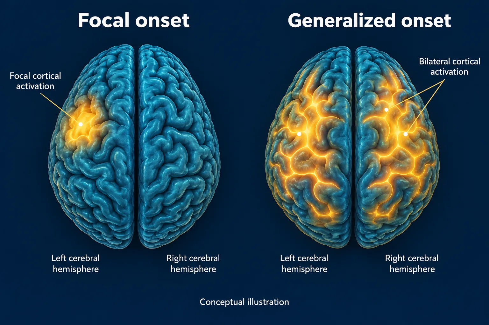

ABSN STUDY HUB · VISUAL STUDY CARD
Seizures

Course labels and notes from the original graphic, arranged into readable sections. The illustration is schematic.
Course overview
SEIZURES — WHAT YOU DO IS MOSTLY WHAT YOU DO NOT DO
Protect the head, time it, turn her on her side. Everything else waits until it stops.
THE TWO FAMILIES
THE TWO FAMILIES
FOCAL
one area — aware or not
Aware: she can tell you about it afterwards. Impaired awareness: staring, lip-smacking, picking at clothes. May spread to become generalized.
GENERALISED
both sides from the start
Tonic-clonic: stiff, then jerks. Absence: blank stare, seconds long. Atonic: drops suddenly. Helmet.
✅ DURING — WHAT YOU DO
✅ DURING — WHAT YOU DO
Stay with her and time it from the first movement. Protect the head; move furniture, loosen tight clothing. Turn her on her side when the jerking stops. Suction and oxygen ready at the bedside. Note what it looked like — where it started, how long.
🚫 NEVER
🚫 NEVER
Nothing in the mouth. She cannot swallow her tongue. Do not restrain her — you will break something. Do not move her unless she is somewhere dangerous. Do not leave her alone. Do not give anything by mouth until fully alert.
🚨 STATUS EPILEPTICUS — THE ONE THAT KILLS
🚨 STATUS EPILEPTICUS — THE ONE THAT KILLS
A seizure lasting more than 5 minutes, or seizures back to back without waking up in between.
1
Airway, oxygen
2
IV lorazepam
3
Then phenytoin
4
Find the cause